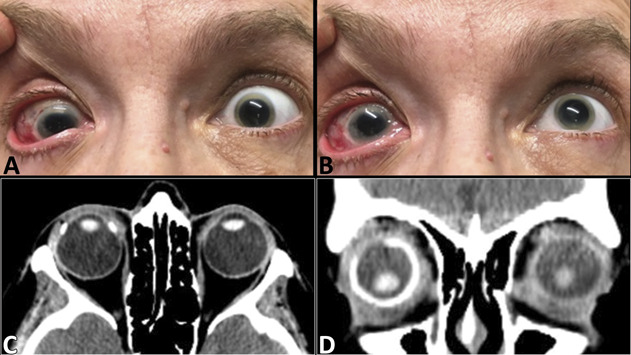
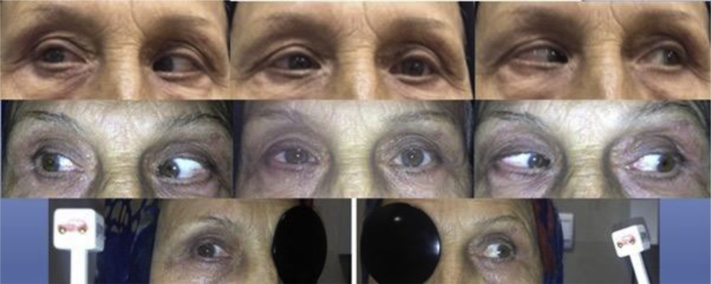

3218 — Lác trong do đai vòng quanh củng mạc: đai kéo cơ, đai di chuyển, hay hội chứng mắt nặng? / Encircling-band esotropia
Tags: pattern:lac-trong pattern:han-che-dang pattern:nhin-doi pattern:ha-nhan-cau pattern:han-che-van-nhan vung:mat vung:hoc-mat vung:co-van-nhan anatomy:co-truc-ngoai anatomy:co-truc-trong anatomy:cung-mac protocol:CT-hoc-mat protocol:MRI-hoc-mat protocol:luoi-9-huong-nhin protocol:forced-duction score:PD score:goc-SR-LR incidentaloma:dai-silicon
Mức chắc chắn (certainty): tổng hợp y văn (literature synthesis) — ghép loạt 264 ca chỉ đặt đai vòng (Ophthalmologe 2003, PMID 12955443), 206 mắt theo dõi 6–36 tháng (J Curr Ophthalmol 2019, PMC6611860), 1.030 ca đặt đai (Retina 2012, PMID 22466475), sổ đăng ký 25.169 mắt (J AAPOS 2025, PMC12185234), 116 ca PPV + đai (Ophthalmol Retina 2018, PMID 31047585), 311 ca (Br J Ophthalmol 1987, PMC1041218), 821 ca (J Fr Ophtalmol 2007, PMID 17978674), các loạt mổ lác sau đặt đai (18 ca — PMC4562672; 25 ca — PMC3870881; 23 ca — PMID 29981929; 12 ca — PMID 30625364), tháo đai (40 mắt — PMC7738227; 1.493 mắt — PMID 27911111; 86 mắt — PMID 37531997), 1 ca đai trượt ra trước có CT (PMC9750093) và 17 ca nghi độc tính thuốc tê (PMID 11039422). Nhóm không có bệnh nhân của mình; chỗ suy luận đánh dấu [suy luận].
Ranh giới với bài đã có: 1499 trả lời song thị/lác KHÔNG do đai (cảm giác – aniseikonia – di lệch võng mạc – dầu silicon); 1493 phủ biến chứng của đai hoàng điểm và nguyên tắc tháo đai; 3212 phủ hội chứng mắt nặng (HES). Bài này chỉ trả lời một câu: sau khi đặt đai vòng, mắt lác trong (hoặc lệch dọc) — cơ chế nào, đo gì trên CT/MRI, và khi nào nới/tháo đai thay vì mổ cơ.
Câu chốt — năm con số phải thuộc: (1) Đai vòng tự nó gây song thị ở tư thế nguyên phát 7% (18/264) lúc 6 tháng, trong đó 55% là lác trong + lệch dọc; khúc xạ đổi trung bình −2,0 D (PMID 12955443). (2) Sau mổ đai nói chung, lác 3,8% (39/1.030; 2,7% do hạn chế cơ học) và 3,39% (7/206) — không phụ thuộc loại đai hay vị trí đai (PMID 22466475; PMC6611860); sổ đăng ký lớn ghi song thị 2,73%, lác 1,79%, mổ lác ≤ 0,27% (PMC12185234). (3) Song thị dai dẳng sau PPV + đai chỉ 5,2% (6/116) và thường là lệch dọc nhỏ 3–5 PD, xử lý bằng lăng kính (PMID 31047585). (4) Mổ cơ không tháo đai: thành công vận động 74% (PMID 29981929); cắt một đoạn đai tại chỗ mổ cơ: 92%, không tái bong (PMID 30625364); tháo toàn bộ đai vòng: tái bong 25% (4/16) vs 0% (0/24) với đai đoạn, p = 0,020 (PMC7738227). (5) Vì vậy tháo đai không phải thủ thuật "chữa lác" — nó là đánh đổi lấy nguy cơ tái bong, và chỉ có lợi khi đai là nguyên nhân cơ học chứng minh được.
1. Tổng quan bệnh học – cơ chế hình ảnh
1.1 Đai vòng "chạm" vào cơ vận nhãn ở đâu
- Vật liệu và vị trí: đai silicon đặc, điển hình rộng 2,5 mm hoặc 4 mm (#41), luồn dưới cả bốn cơ trực quanh xích đạo nhãn cầu rồi siết bằng ống silicon; có thể cố định qua đường hầm củng mạc (scleral belt loop) thay vì khâu mũi chữ U (ca lâm sàng PMC9750093 dùng đai #41 rộng 4 mm qua belt loop 4 góc).
- Hai tác động cơ học cùng lúc:
- Siết vòng xích đạo → nhãn cầu bị ép theo chu vi, tiền phòng nông hơn, thể thủy tinh dày hơn ≥ 6 tuần → dịch chuyển khúc xạ về phía cận thị, trung bình −2,0 D (PMID 835668; PMID 12955443). Lưu ý phản biện: A-scan 30 mắt cho thấy đai + độn silicon cứng không làm trục nhãn cầu dài ra dự đoán được — phần lớn thay đổi khúc xạ đến từ nông tiền phòng/dày thể thủy tinh, không phải "mắt dài ra" (PMID 835668).
- Đai chen giữa cơ và củng mạc, làm cung tiếp xúc (arc of contact) của cơ đổi và tạo sẹo xơ quanh đai — đây là nguồn gốc của lác hạn chế.
- TẠI SAO đai gây lác mà không chỉ gây cận thị: cơ trực phải trượt trên củng mạc khi mắt quay. Một dải vật liệu + xơ hóa vòng quanh xích đạo biến mặt trượt thành dây neo: cơ không còn trượt tự do, và bất kỳ cơ nào bị dính vào đai đều mất một phần biên độ. Vì vậy cùng một đai có thể cho lác trong (hạn chế dạng), hạ nhãn (đai/độn dưới cơ trực dưới) hoặc hạn chế mọi hướng (đai di chuyển ra trước) — hướng lác không do "đai kéo mắt vào trong" mà do cơ nào bị neo.
1.2 Bốn con đường dẫn tới lác sau đai — và dấu chốt của từng đường
| Cơ chế | Vì sao mắt lệch | Dấu chốt lâm sàng | Trên ảnh |
|---|---|---|---|
| 1. Dính mỡ – sẹo quanh cơ (fat adherence) | Bóc Tenon/mỡ quanh mắt khi đặt đai → dải xơ giữa cơ – bao Tenon – mỡ hốc mắt; cơ không trượt | Hạn chế nhiều hướng, forced duction (+), không đau, xuất hiện vài tuần–vài tháng sau mổ | CT: không thấy đai di lệch; MRI: cơ dính vào mỡ, mất lớp mỡ sáng quanh cơ |
| 2. "Dây neo" do đai (leash effect) | Đai nâng cơ khỏi củng mạc + xơ hóa trước chỗ bám → chiều dài hiệu dụng của cơ giảm | Lác trong + hạn chế dạng đơn độc, forced duction (+) theo một hướng | CT: đai nằm đúng xích đạo, không di lệch; MRI: đường đi cơ bị kéo thẳng |
| 3. Đai di chuyển/lộ ra trước | Đường hầm củng mạc bục, khâu bung, nhiễm → đai trượt ra trước, kéo nhiều cơ về phía rìa | Đau + song thị cấp, hạn chế mọi hướng, có thể thấy đai dưới kết mạc | CT: đai ra trước xích đạo/chạm rìa (PMC9750093); siêu âm sinh học thấy vật liệu sát củng mạc trước |
| 4. Cơ yếu do thiếu máu/độc tính thuốc tê | Cryo + thắt cơ hoặc thuốc tê tại chỗ gây độc cơ → xơ teo cơ | Lệch dọc (hạ nhãn), góc lác không tương xứng, forced duction có thể âm tính sớm | MRI: cơ mỏng, teo; không có đai di lệch |
| 5. Cảm giác (aniseikonia/bệnh hoàng điểm) | Ảnh hai mắt khác kích thước hoặc lệch điểm vàng — trục mắt thẳng | Song thị khi hai mắt, hết khi che một mắt, góc lác 0–vài PD, nghiệm pháp lăng kính thất bại | OCT/đáy mắt: bệnh hoàng điểm; không hạn chế vận nhãn (bài 1499) |
| 6. HES ở mắt cận thị nặng | Nhãn cầu dài chui khỏi nón cơ: LR trượt xuống, SR trượt vào trong | Lác trong + hạ nhãn tiến triển, hạn chế dạng và nâng, trục dài (thường > 27 mm, mốc “tới hạn” 32 mm) | MRI: góc SR–LR > 107° (PMC13750804; bài 3212) |
- Vì sao "lác trong" lại là thể được nhắc nhiều nhất trong loạt chỉ đặt đai: trong 18 ca song thị sau đai vòng, 55% là lác trong kèm lệch dọc (PMID 12955443). Ngược lại, khi có độn dưới cơ trực dưới, thể thường gặp là hạ nhãn — 14/17 ca mổ lác sau đặt đai có forced duction (+) và hạ nhãn đứng đầu (PMID 11039422). Nghĩa là hướng lác phản ánh vị trí vật liệu, không phải bản chất "đai vòng".
1.3 Vì sao phải chỉnh kính trước khi nghĩ đến mổ
- Đai làm khúc xạ cận thị hơn ~ −2,0 D và có thể gây anisometropia giữa hai mắt → aniseikonia → song thị kiểu cảm giác chồng lên lác thật. Loạt 264 ca khuyến nghị chỉnh kính đầy đủ sớm để "bù cảm giác" cho lệch trục (PMID 12955443).
- Hệ quả thực hành: một bệnh nhân "lác trong 6 PD + song thị" sau đai có thể hết song thị chỉ bằng kính đúng, trước khi can thiệp cơ hoặc đai.
1.4 Vì sao CT thấy đai còn MRI thấy "lỗ trống"
- CT: silicon đặc có tỷ trọng 1,1–1,2 g/cm³ nên cản tia hơn mô mềm → hiện dải đậm quanh nhãn cầu (mặt phẳng coronal thấy vòng, mặt phẳng axial thấy hai chấm/đoạn ở hai bên xích đạo). Độ đậm không cần cản quang; khung xương không cần cửa sổ xương. [suy luận từ tỷ trọng — chưa có ngưỡng HU chuẩn hóa]
- Bọt silicon xốp (sponge) khác hẳn: có khí trong lỗ → đậm độ thấp, dễ bị đọc nhầm là khí mô mềm/áp-xe nếu không biết tiền sử.
- MRI: silicon không có proton di động → tín hiệu trống trên mọi chuỗi xung, kèm giả ảnh cảm ứng từ quanh đai. Vì vậy MRI không dùng để đo đai, nhưng là phương tiện đúng để đo đường đi cơ, góc SR–LR, và loại trừ nguyên nhân hốc mắt (khối, dầu silicon trong cơ).
- Cạm bẫy vật lý: trên CT, thể tích một phần (partial volume) ở cực trên/dưới nhãn cầu có thể làm đai trông "dày" hoặc "đứt"; luôn đọc hai mặt phẳng trực giao trước khi kết luận đai di lệch.
2. Mẫu hình + chẩn đoán phân biệt theo thời điểm và hướng lệch
- Theo thời điểm:
- 0–2 tuần: phù mô mềm, đau, hạn chế do phản ứng viêm; đai trượt ra trước (đau + hạn chế mọi hướng) là ca cấp cứu cơ học.
- 1–6 tháng: dính mỡ/sẹo đang hình thành; nhiều ca tự cải thiện (đến 50% lác thoáng qua — PMC6611860).
- > 6 tháng: lác tồn tại; lúc này mới đủ dữ kiện để quyết định nới/tháo đai hay mổ cơ.
- Nhiều năm: đai hydrogel muộn, đai lộ/nhiễm, hoặc HES tiến triển trên mắt cận thị nặng.
- Theo hướng lệch:
- Lác trong + hạn chế dạng → dây neo cơ/dính phía trong hoặc đai siết; phân biệt HES (trục dài, góc SR–LR rộng).
- Hạ nhãn ± lác trong → độn/đai dưới cơ trực dưới hoặc độc tính thuốc tê (PMID 11039422).
- Hạn chế mọi hướng + đau → đai di chuyển ra trước/lộ (PMC9750093).
- Góc rất nhỏ 3–5 PD, chỉ lệch dọc → thường microdeviation, lăng kính đủ (PMID 31047585).
- Không hạn chế + song thị khi hai mắt → cảm giác/aniseikonia (bài 1499).
3. Bảng so sánh phân biệt (ma trận đối chiếu)
| Thực thể (entity) | Hình ảnh điển hình | Chốt vào (rule-in) | Chốt loại (rule-out) | Gợi ý xác nhận |
|---|---|---|---|---|
| Lác do dây neo đai (leash) | CT: đai đúng xích đạo; MRI: cơ thẳng, dính củng mạc trước chỗ bám | Tiền sử đai + lác trong/hạn chế một hướng + forced duction (+); đau không có | Không hạn chế thụ động → không phải cơ chế cơ học | Forced duction; CT coronal đo vị trí đai so với xích đạo |
| Đai di chuyển ra trước | CT: đai ra trước xích đạo, sát rìa; đai thấy dưới kết mạc | Đau + song thị cấp + hạn chế mọi hướng; đai lệch trên CT | Đau nhẹ, hạn chế một hướng, đai đúng vị trí → không phải | CT axial + coronal; thăm dò thì đầu |
| Dính mỡ (fat adherence) | MRI: mất lớp mỡ sáng quanh cơ, cơ dính vào mỡ/hốc mắt | Hạn chế nhiều hướng vài tuần sau mổ, forced duction (+) lan tỏa | Đai di lệch rõ trên CT → nguyên nhân là đai, không chỉ dính | MRI T1 fat-sat; đo góc lác 9 hướng |
| Cơ yếu/độc tính thuốc tê | MRI: cơ teo, mỏng; CT không bất thường | Hạ nhãn, mổ dưới gây tê tại chỗ, góc không tương xứng | Forced duction (+) mạnh + đai lệch → cơ học | So sánh độ dày cơ hai bên trên MRI |
| HES (hội chứng mắt nặng) | MRI: góc SR–LR > 107°, nhãn cầu dài, LR trượt xuống | Lác trong + hạ nhãn tiến triển ở mắt cận thị nặng (> 27 mm; mốc “tới hạn” 32 mm), không đau | Đai lệch/forced duction khu trú → do đai (bài 3212) | MRI quasi-coronal 8 mm trước chỗ nối thị thần kinh |
| Lác cảm giác/aniseikonia | OCT/đáy mắt: bệnh hoàng điểm; CT/MRI bình thường | Song thị hai mắt, hết khi che một mắt, góc 0–vài PD, không hạn chế | Forced duction (+) hoặc góc lớn → không phải cảm giác | Kính lỗ kim, NAT/aniseikonia, OCT (bài 1499) |
| Lệch do mất bù heterophoria sẵn có | Không tổn thương trên ảnh | Lác trước mổ đã có (heterophoria), xuất hiện sau khi mắt còn lại được chỉnh | Lác mới hoàn toàn sau mổ + hạn chế → do mổ | Hồ sơ khám trước mổ; test che |

Hình: (A, B) hạ nhãn phải 40 PD, hạn chế nâng mắt 1 tháng sau mổ đai; (C, D) CT hốc mắt — đai silicon di chuyển ra trước, kéo cơ dưới–trong–ngoài tới rìa dưới. Nguồn: PMC9750093, CC BY-NC-ND 4.0 (nguyên bản, không cắt/ghép).
4. Protocol chụp + ngưỡng quyết định
4.1 Trình tự tối thiểu (lâm sàng trước, ảnh sau)
- Xác nhận võng mạc áp (soi đáy mắt ± B-scan/OCT). Không mổ lác khi võng mạc bong hoặc có lỗ chưa xử lý.
- Đo lệch trục: cover test + lăng kính, 9 hướng nhìn, ghi PD ở xa và gần; đo góc lác trước–sau mổ đai nếu có.
- Forced duction test — chuẩn vàng phân biệt hạn chế cơ học với cơ yếu. Đây là bước quyết định có nên can thiệp đai hay không.
- Khúc xạ + aniseikonia — chỉnh kính tối ưu trước khi kết luận "song thị do lác".
- Chụp ảnh khi: đau + song thị cấp, hạn chế không giải thích được, nghi đai di lệch/lộ/nhiễm, hoặc trước mổ cơ để lập bản đồ cơ–đai.
4.2 Chọn modality
- CT hốc mắt không cản quang, lát ≤ 1 mm, dựng axial + coronal: câu hỏi chính là "đai có nằm đúng xích đạo không, có ra trước không". Chỉ định khi đau, hạn chế mọi hướng, nghi đai trượt/lộ.
- MRI hốc mắt 1,5–3 T, T1 ± fat-sat, T2 fat-sat, lát 2 mm: khi cần đường đi cơ, góc SR–LR (loại trừ HES), hoặc loại trừ nguyên nhân hốc mắt. Đai cho tín hiệu trống — không cố đo đai trên MRI.
- Siêu âm B-scan: xác nhận võng mạc áp và vị trí vật liệu sát củng mạc phía trước khi CT không sẵn có; tránh ấn đầu dò mạnh trên mắt vừa mổ.
4.3 Ngưỡng và định nghĩa "thành công"
- Thời gian chờ: không can thiệp cơ/đai trong 6 tuần đầu nếu võng mạc áp, không đau, không lộ đai — vì tới 50% lác thoáng qua (PMC6611860) và 5,2% song thị dai dẳng thường chỉ 3–5 PD (PMID 31047585).
- Mốc quyết định: song thị còn sau 6 tháng + forced duction (+) là chỉ định can thiệp cơ học.
- Định nghĩa thành công vận động hay dùng: lệch ngang ≤ 10 PD và lệch dọc ≤ 4 PD (PMC3870881; PMC4562672); loạt cắt một đoạn đai dùng chặt hơn: ≤ 8 PD ngang, ≤ 2 PD dọc, < 5° xoắn (PMID 30625364).
- Đánh đổi tháo đai: tái bong 10% chung; đai vòng 25% so với đai đoạn 0% (p = 0,020) (PMC7738227); thời điểm tháo càng sớm càng nguy hiểm — chi tiết trong bài 1499.
- Kỳ vọng kết quả: mổ cơ không tháo đai → 74% thành công vận động, 94% cải thiện song thị (PMID 29981929); cắt một đoạn đai tại chỗ mổ cơ → 92%, không tái bong trong loạt nhỏ (PMID 30625364); tháo đai + mổ cơ → 62,5% so với 10% khi giữ đai (n = 18, p = 0,04; PMC4562672) nhưng loạt 25 ca khác không thấy lợi ích của tháo đai (PMC3870881). [Tranh cãi — xem mục 7]
- HES: góc SR–LR > 107° + trục nhãn cầu dài → loop myopexy, không cắt cơ ngang đơn thuần (PMC13750804; bài 3212).
4.4 Sơ đồ quyết định
flowchart TD
A["Song thị/lác sau đặt đai vòng"] --> B{"Võng mạc áp và dịch kính ổn?"}
B -->|"Không"| Z["Ưu tiên xử lý dịch kính–võng mạc"]
B -->|"Có"| C{"Thời gian sau mổ"}
C -->|"Dưới 6 tuần"| D["Theo dõi + lăng kính; đa số thoáng qua"]
C -->|"6 tuần đến 6 tháng"| E["Lăng kính hoặc botulinum; đo lại 9 hướng"]
C -->|"Trên 6 tháng, còn song thị"| F{"Forced duction dương?"}
F -->|"Không"| G{"Trục nhãn cầu dài, góc SR–LR rộng?"}
G -->|"Có"| H["HES: loop myopexy, không cắt cơ ngang đơn thuần"]
G -->|"Không"| I["Lác cảm giác: chỉnh kính hoặc che, không mổ"]
F -->|"Có"| J{"CT: đai ra trước hoặc di lệch?"}
J -->|"Có"| K["Tháo hoặc nới đai; chuẩn bị phương án tái bong"]
J -->|"Không"| L["Mổ cơ, cân nhắc cắt một đoạn đai tại chỗ"]
5. Biến thể bình thường và cạm bẫy
- Lệch dọc nhỏ 3–5 PD sau đai là "bình thường có triệu chứng": 6/116 ca, đa số không cần mổ, lăng kính đủ và không thay đổi khi theo dõi (PMID 31047585). Đừng đẩy bệnh nhân vào mổ cơ vì một lệch vi thể.
- Lác thoáng qua 1–6 tuần: phù mi, phù Tenon, đau làm hạn chế giả; tới 3–50% trong y văn (PMC6611860). Chụp CT ngay tuần đầu không phân biệt được phù với dính.
- Đừng đọc đai xốp là "khí/áp-xe": sponge silicon có khí trong lỗ → đậm độ thấp; so với tiền sử mổ và hình dạng khối (bờ đều, khu trú dưới cơ).
- Đừng chẩn đoán HES chỉ vì "mắt cận thị + lác trong": HES cần trục dài và góc SR–LR rộng trên MRI; một mắt cận thị −8 D với đai vẫn có thể lác do dây neo (PMC13750804; bài 3212).
- Đừng tháo đai "cho nhanh": tháo đai không sửa được lác do sẹo phì đại (PMID 12955443) và làm tăng tái bong, nhất là đai vòng tháo sớm (PMC7738227).
- Đừng mổ cơ mà không kiểm tra đai: mổ cơ trên mắt có đai mà bỏ qua đai di lệch dẫn tới thất bại 90% trong loạt giữ đai của PMC4562672 (đối lập với 62,5% khi tháo) — hoặc tệ hơn: mở nhầm khoang, chảy máu, làm đai bong thêm.
- Song thị một mắt (monocular): do bệnh hoàng điểm/loạn dưỡng — không phải chỉ định mổ cơ; hỏi "che một mắt còn đôi không?".
6. Tự lượng giá — Blind Quiz
Ca 1 — 52 tuổi, 4 tháng sau đặt đai vòng vì bong võng mạc. Nhìn thẳng thấy mắt phải lệch vào trong; khi nhìn sang phải mắt phải không ra hết.

- Gợi ý lâm sàng: võng mạc áp, không đau; forced duction hạn chế dạng.
- Câu hỏi: (1) Mô tả lệch trục và hướng hạn chế? (2) Ba chẩn đoán phân biệt? (3) Dấu hiệu nào chốt cơ chế?
Bấm để hiện đáp án (findings + chẩn đoán)
- Dấu hiệu: lác trong mắt phải; hạn chế dạng rõ, các hướng khác gần đủ → lệch không tương xứng, không có dấu thần kinh.
- Chẩn đoán: lác trong hạn chế sau đặt đai (dây neo/dính quanh cơ trực ngoài). Phân biệt: HES (trục dài, hạn chế nâng kèm), lác cảm giác (không hạn chế), đai di chuyển ra trước (đau, hạn chế mọi hướng).
- Chốt: forced duction (+) theo hướng dạng + CT đai đúng xích đạo → cơ chế cơ học tại chỗ, không phải HES.
- Xử trí trong ca này: botulinum toxin làm giảm lác trong và cải thiện dạng (ảnh dưới); lăng kính/botulinum trước, mổ cơ ± cắt một đoạn đai nếu còn sau 6 tháng.
- Nguồn ảnh: PMC6611860 Fig. 1, CC BY-NC-ND 4.0 (nguyên bản).
Ca 2 — 54 tuổi, 1 tháng sau PPV + đai vòng, đau mắt tăng dần và nhìn đôi; mắt phải lệch xuống rõ, quay mọi hướng đều đau và hạn chế.
- Gợi ý lâm sàng: đai #41 rộng 4 mm qua đường hầm củng mạc; forced duction hạn chế mọi hướng.
- Câu hỏi: (1) Vì sao hạn chế mọi hướng chứ không một hướng? (2) CT (C, D) cho thấy gì? (3) Xử trí và nguy cơ?
Bấm để hiện đáp án (findings + chẩn đoán)
- Dấu hiệu: hạ nhãn 40 PD, hạn chế nâng và hạn chế cả dạng/khép; đau khi cử động; kết mạc xung huyết, có nếp kết mạc phủ rìa dưới.
- CT: đai silicon ra trước xích đạo, kéo cơ dưới – trong – ngoài về phía rìa dưới; không có áp-xe hốc mắt.
- Chẩn đoán: đai trượt ra trước do bục đường hầm củng mạc — hạn chế mọi hướng vì nhiều cơ bị kéo + dính củng mạc trước chỗ bám, không phải một cơ.
- Xử trí: tháo đai + gỡ dính; đau và vận nhãn cải thiện ngay ngày đầu; võng mạc áp ở 6 tháng. Nguy cơ: tái bong (10% chung, 25% nếu tháo đai vòng — PMC7738227).
- Nguồn ảnh: PMC9750093 Fig. 1, CC BY-NC-ND 4.0 (nguyên bản, 4 panel).
7. Câu hỏi nghiên cứu & điểm chưa đồng thuận (tính đến 11/2026)
[Tranh cãi] Ở bệnh nhân lác sau đặt đai, tháo/nới đai cùng lúc mổ cơ có cải thiện kết quả trục so với mổ cơ đơn thuần không?
- Đã biết: loạt 18 ca thấy 62,5% thành công khi tháo đai so với 10% khi giữ (p = 0,04; PMC4562672); nhưng loạt 25 ca không thấy lợi ích (72% chung; PMC3870881) và 23 ca mổ cơ không tháo đai đạt 74% (PMID 29981929).
- Chưa rõ: khác biệt do chỉ định tháo (đai lệch/lộ vs đai đúng vị trí), cỡ mẫu nhỏ, và định nghĩa thành công khác nhau (≤ 8 PD vs ≤ 10 PD).
- Hướng nghiên cứu: đoàn hệ tiến cứu phân tầng theo vị trí đai trên CT và forced duction, cùng một định nghĩa đầu ra.
- Nguồn: PMC4562672 (2013); PMC3870881 (2013); PMID 29981929 (2018).
[Khoảng trống] Tiêu chuẩn hình ảnh nào xác định "đai là nguyên nhân" đủ để chỉ định tháo — khoảng cách đai–xích đạo, đai–rìa, hay độ dày dính trên MRI?
- Đã biết: ca bục đường hầm củng mạc có CT thấy đai ra trước và tháo đai giải quyết triệu chứng (PMC9750093); không có loạt nào đo mm vị trí đai so với xích đạo để dự báo kết quả.
- Chưa rõ: ngưỡng mm di lệch ra trước; giá trị của MRI với tín hiệu trống của đai; mức độ dính quanh cơ (fat adherence) đo được bao nhiêu.
- Hướng nghiên cứu: nghiên cứu độ chính xác chẩn đoán, đối chiếu CT/MRI với thì đầu và kết quả sau tháo/nới đai.
- Nguồn: PMC9750093 (2023); doi:10.1097/ICB.0000000000001104.
[Khác biệt thực hành] Sau đai vòng, nên theo dõi + lăng kính 6 tháng rồi mới can thiệp, hay tháo đai sớm ở ca đau + song thị cấp?
- Đã biết: 50% lác thoáng qua và 5,2% song thị dai dẳng thường nhỏ, đáp ứng lăng kính (PMC6611860; PMID 31047585); ngược lại 12 ca có song thị > 3 tháng được tháo đai đầu tay, 6/12 hồi phục thị giác hai mắt (PMID 17978674), và 86,6% ca tháo đai hết triệu chứng nhưng tái bong 6,56% (PMID 37531997).
- Chưa rõ: ca nào "chờ được" và ca nào phải tháo sớm (đau nhiều, đai lộ, hạn chế mọi hướng) — chưa có tiêu chí thống nhất.
- Hướng nghiên cứu: registry theo dõi dọc, phân tầng theo thời điểm can thiệp và mức độ hạn chế.
- Nguồn: PMID 37531997 (2024); PMID 17978674 (2007); PMC6611860 (2019).
Bài liên quan chéo
- 1499 — Song thị và lác sau mổ bong võng mạc KHÔNG do đai
- 1493 — Biến chứng đai hoàng điểm: khi nào tháo
- 3212 — Hội chứng mắt nặng (HES) ở cận thị cao
- 429 — Đo trục nhãn cầu bằng MRI/CT
- 1878 — Bong võng mạc lỗ hoàng điểm: đai hay cắt dịch kính
Ảnh
images/3218_PMC6611860-Fig1.jpg— 9 hướng nhìn trước/sau botulinum (PMC6611860, Fig. 1, CC BY-NC-ND 4.0).images/3218_PMC9750093-Fig1.jpg— hạ nhãn 40 PD + CT đai ra trước (PMC9750093, Fig. 1, CC BY-NC-ND 4.0).- Cả hai dùng nguyên bản, không crop/ghép (điều kiện ND); chi tiết trong
images/CREDITS.md.
Không dùng để chẩn đoán độc lập khi chưa có người hướng dẫn.